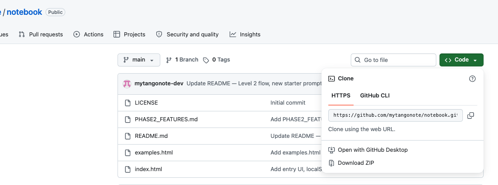
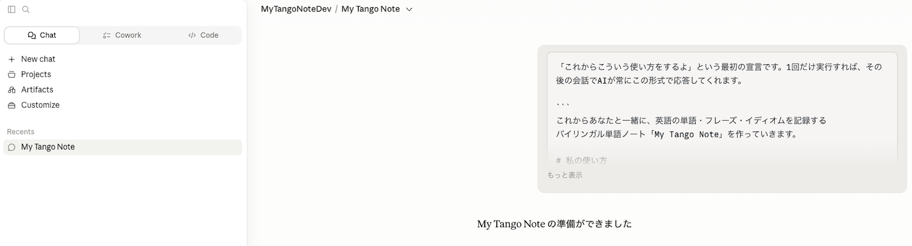

AIで仕事のスピードは爆発的に上がった。英文メールはすぐに訳してくれるし、返信案も英語で作ってくれる。英語を使ったコミュニケーションは、確かに進んでいる。
けれど、自分に「残った英語」がないことに、気がついた。
気になった英単語をClaudeに尋ねると、その意味・例文・ニュアンスが、英語と日本語の両方で整えられて返ってきます。
集めたエントリーは、検索・フィルタ・読み上げに対応。CSVやJSONでいつでも書き出せるので、あなたの言葉は、ずっとあなたのもとに。
サーバーなし、アカウントなし、ログインなし。ブラウザ1つで動く、あなただけの単語ノートです。
ビジネスで使う "conflict" と、文学で語られる "conflict" は、同じ言葉でもまるで別もの。あなたの読む文脈、書く文脈に合わせて、Claudeが例文と注釈を整えます。
index.html を個別保存。ダブルクリックで開けば、それがあなたの単語ノートです。同梱の examples.html は完成イメージの見本として参考になります。サーバー不要、すべてローカルで完結します。index.html をブラウザで開いたら、お気に入り(ブックマーク)に登録しておくと便利です。いつでも 1 クリックで自分のノートに戻れます。
